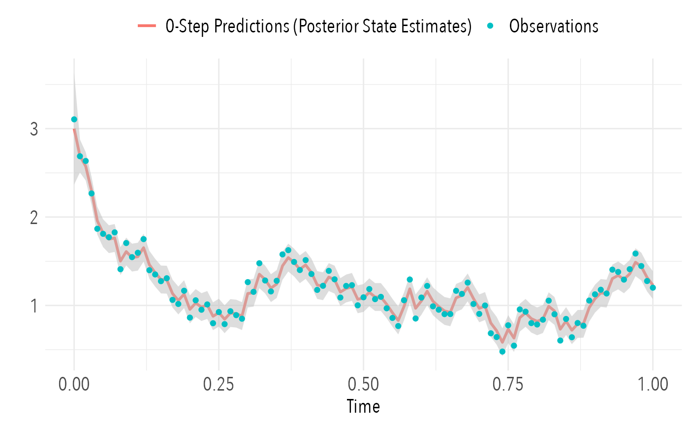

We demonstate how to use the predict method to obtain
k-step ahead predictions / forecasts of a model object, and the
observations.
A prediction in this context is considered to be a prior estimate of the state mean and covariance i.e. an estimate obtained without incorporating information from future observations. We denote these
\[ \hat{x}_{i|j} = \mathrm{E}(x_{t_{i}} | x_{t_{j}}, y_{t_{j}}) \\ \hat{P}_{i|j} = \mathrm{V}(x_{t_{i}} | x_{t_{j}}, y_{t_{j}}) \] where \(i \geq j\).
The predict method computes the predictions depending on
its argument method in the following way:
The Extended Kalman FIlter (
method=ekf): The posterior values \(\hat{x}_{i|i}\), \(\hat{P}_{i|i}\) are obtained from the filter. In each iteration the moment ODEs \[ \begin{align} \frac{d\hat{x}_{i|i}}{dt} &= f(\hat{x}_{i|i},\cdots) \\ \frac{d\hat{P}_{i|i}}{dt} &= \left[\frac{df}{dx}(\hat{x}_{i|i},\cdots)\right] \hat{P}_{i|i} + \hat{P}_{i|i} \left[\frac{df}{dx}(\hat{x}_{i|i},\cdots)\right]^{T} + G(\hat{x}_{i|i},\cdots)G^{T}(\hat{x}_{i|i},\cdots) \end{align} \] are solved from the initial time \(t_{i}\) until \(t_{j}\) where the number of steps is determined by the argumentk.aheadtopredict, i.e.j=i+k.ahead. The solution at each time point \(t_{i+1}, t_{i+2}, \dots, t_{i+k.ahead}\) is the desired predictions. We note that these predictions assume that the underlying probability density of the SDE remains approximately Gaussian. If the prediction horizon is large then this assumption probably doesn’t hold, and one should instead use stochastic predictions via the argumentstochastic=TRUE. The stochastic predictions are generated by simulating the SDE forward in time many times using an Euler-Maruyama scheme and reporting back quantiles of the emperical distribution.The Laplace Approximation (
method=tmb): Thepredictmethod is not yet implemented.
Simulate from the Ornstein-Uhlenbeck process
We use the Ornstein-Uhlenbeck process again.
\[ \mathrm{d}X_{t} = \theta (\mu - X_{t}) \, \mathrm{d}t \, + \sigma_{X} \, \mathrm{d}B_{t} \]
\[ Y_{t_{k}} = X_{t_{k}} + e_{t_{k}}, \qquad e_{t_{k}} \sim \mathcal{N}\left(0,\sigma_{Y}^{2}\right) \] We first create data by simulating the process
# Simulate data using Euler Maruyama
set.seed(10)
theta=10; mu=1; sigma_x=1; sigma_y=1e-1
#
dt.sim = 1e-3
t.sim = seq(0,1,by=dt.sim)
dw = rnorm(length(t.sim)-1,sd=sqrt(dt.sim))
x = 3
for(i in 1:(length(t.sim)-1)) {
x[i+1] = x[i] + theta*(mu-x[i])*dt.sim + sigma_x*dw[i]
}
# Extract observations and add noise
dt.obs = 1e-2
t.obs = seq(0,1,by=dt.obs)
y = x[t.sim %in% t.obs] + sigma_y * rnorm(length(t.obs))
# Create data
.data = data.frame(
t = t.obs,
y = y
)Construct model object
We now construct the sdeTMB model object
# Create model object
obj = sdeTMB$new()
# Set name of model (and the created .cpp file)
obj$set_modelname("ornstein_uhlenbeck")
# Add system equations
obj$add_systems(
dx ~ theta * (mu-x) * dt + sigma_x*dw
)
# Add observation equations
obj$add_observations(
y ~ x
)
# Set observation equation variances
obj$add_observation_variances(
y ~ sigma_y^2
)
# Specify algebraic relations
obj$add_algebraics(
theta ~ exp(logtheta),
sigma_x ~ exp(logsigma_x),
sigma_y ~ exp(logsigma_y)
)
# Specify parameter initial values and lower/upper bounds in estimation
obj$add_parameters(
logtheta = log(c(initial = 5, lower = 0, upper = 20)),
mu = c( initial = 0, lower = -10, upper = 10),
logsigma_x = log(c(initial = 1e-1, lower = 1e-5, upper = 5)),
logsigma_y = log(c(initial = 1e-1, lower = 1e-5, upper = 5))
)
# Set initial state mean and covariance
obj$set_initial_state(list(x[1], 1e-1*diag(1)))Predict
We can use the predict function without having called
estimate first, in which case the initial value of the
parameters provided during add_parameters are used.
pred = obj$predict(.data)The output of predict is a data.frame with indices and
time-points, state values and associated standard deviations, and
observations provided in the data, and predicted observation values
based from the predicted state values.
head(pred)## $states
## i. j. t.i t.j k.ahead x var.x
## 1 0 0 0.00 0.00 0 3.0000000 0.1000000000
## 2 0 1 0.00 0.01 1 2.8536883 0.0905789125
## 3 1 1 0.01 0.01 0 2.7041164 0.0090057558
## 4 1 2 0.01 0.02 1 2.5722351 0.0082439081
## 5 2 2 0.02 0.02 0 2.6004105 0.0045187183
## 6 2 3 0.02 0.03 1 2.4735870 0.0041838682
## 7 3 3 0.03 0.03 0 2.4126775 0.0029497371
## 8 3 4 0.03 0.04 1 2.2950098 0.0027641952
## 9 4 4 0.04 0.04 0 2.2023814 0.0021655852
## 10 4 5 0.04 0.05 1 2.0949700 0.0020546652
## 11 5 5 0.05 0.05 0 2.0464391 0.0017044565
## 12 5 6 0.05 0.06 1 1.9466331 0.0016374186
## 13 6 6 0.06 0.06 0 1.9220889 0.0014070291
## 14 6 7 0.06 0.07 1 1.8283475 0.0013682952
## 15 7 7 0.07 0.07 0 1.8281541 0.0012036063
## 16 7 8 0.07 0.08 1 1.7389940 0.0011842306
## 17 8 8 0.08 0.08 0 1.7041538 0.0010588396
## 18 8 9 0.08 0.09 1 1.6210412 0.0010532403
## 19 9 9 0.09 0.09 0 1.6291405 0.0009528792
## 20 9 10 0.09 0.10 1 1.5496864 0.0009573633
## 21 10 10 0.10 0.10 0 1.5494076 0.0008737169
## 22 10 11 0.10 0.11 1 1.4738421 0.0008857343
## 23 11 11 0.11 0.11 0 1.4837636 0.0008136652
## 24 11 12 0.11 0.12 1 1.4113996 0.0008313973
## 25 12 12 0.12 0.12 0 1.4374217 0.0007675808
## 26 12 13 0.12 0.13 1 1.3673178 0.0007896984
## 27 13 13 0.13 0.13 0 1.3695955 0.0007319003
## 28 13 14 0.13 0.14 1 1.3027995 0.0007574134
## 29 14 14 0.14 0.14 0 1.3061822 0.0007040850
## 30 14 15 0.14 0.15 1 1.2424790 0.0007322450
## 31 15 15 0.15 0.15 0 1.2446653 0.0006822851
## 32 15 16 0.15 0.16 1 1.1839623 0.0007125196
## 33 16 16 0.16 0.16 0 1.1922016 0.0006651279
## 34 16 17 0.16 0.17 1 1.1340572 0.0006969952
## 35 17 17 0.17 0.17 0 1.1294292 0.0006515804
## 36 17 18 0.17 0.18 1 1.0743463 0.0006847368
## 37 18 18 0.18 0.18 0 1.0706612 0.0006408551
## 38 18 19 0.18 0.19 1 1.0184444 0.0006750323
## 39 19 19 0.19 0.19 0 1.0278052 0.0006323468
## 40 19 20 0.19 0.20 1 0.9776785 0.0006673336
## 41 20 20 0.20 0.20 0 0.9704597 0.0006255861
## 42 20 21 0.20 0.21 1 0.9231298 0.0006612163
## 43 21 21 0.21 0.21 0 0.9315183 0.0006202072
## 44 21 22 0.21 0.22 1 0.8860876 0.0006563492
## 45 22 22 0.22 0.22 0 0.8901063 0.0006159232
## 46 22 23 0.22 0.23 1 0.8466953 0.0006524729
## 47 23 23 0.23 0.23 0 0.8567910 0.0006125084
## 48 23 24 0.23 0.24 1 0.8150048 0.0006493830
## 49 24 24 0.24 0.24 0 0.8140256 0.0006097847
## 50 24 25 0.24 0.25 1 0.7743251 0.0006469185
## 51 25 25 0.25 0.25 0 0.7835132 0.0006076110
## 52 25 26 0.25 0.26 1 0.7453008 0.0006449518
## 53 26 26 0.26 0.26 0 0.7479445 0.0006058757
## 54 26 27 0.26 0.27 1 0.7114668 0.0006433815
## 55 27 27 0.27 0.27 0 0.7249522 0.0006044898
## 56 27 28 0.27 0.28 1 0.6895959 0.0006421275
## 57 28 28 0.28 0.28 0 0.7017095 0.0006033827
## 58 28 29 0.28 0.29 1 0.6674867 0.0006411258
## 59 29 29 0.29 0.29 0 0.6784737 0.0006024981
## 60 29 30 0.29 0.30 1 0.6453841 0.0006403253
## 61 30 30 0.30 0.30 0 0.6826068 0.0006017911
## 62 30 31 0.30 0.31 1 0.6493156 0.0006396857
## 63 31 31 0.31 0.31 0 0.6796551 0.0006012261
## 64 31 32 0.31 0.32 1 0.6465080 0.0006391744
## 65 32 32 0.32 0.32 0 0.6964303 0.0006007745
## 66 32 33 0.32 0.33 1 0.6624650 0.0006387658
## 67 33 33 0.33 0.33 0 0.6996848 0.0006004134
## 68 33 34 0.33 0.34 1 0.6655608 0.0006384391
## 69 34 34 0.34 0.34 0 0.6951424 0.0006001248
## 70 34 35 0.34 0.35 1 0.6612399 0.0006381779
## 71 35 35 0.35 0.35 0 0.6982807 0.0005998940
## 72 35 36 0.35 0.36 1 0.6642252 0.0006379691
## 73 36 36 0.36 0.36 0 0.7189928 0.0005997095
## 74 36 37 0.36 0.37 1 0.6839271 0.0006378021
## 75 37 37 0.37 0.37 0 0.7403732 0.0005995619
## 76 37 38 0.37 0.38 1 0.7042648 0.0006376686
## 77 38 38 0.38 0.38 0 0.7515000 0.0005994440
## 78 38 39 0.38 0.39 1 0.7148489 0.0006375619
## 79 39 39 0.39 0.39 0 0.7559364 0.0005993496
## 80 39 40 0.39 0.40 1 0.7190689 0.0006374765
## 81 40 40 0.40 0.40 0 0.7666375 0.0005992742
## 82 40 41 0.40 0.41 1 0.7292482 0.0006374083
## 83 41 41 0.41 0.41 0 0.7667833 0.0005992139
## 84 41 42 0.41 0.42 1 0.7293868 0.0006373537
## 85 42 42 0.42 0.42 0 0.7561428 0.0005991656
## 86 42 43 0.42 0.43 1 0.7192653 0.0006373100
## 87 43 43 0.43 0.43 0 0.7493877 0.0005991271
## 88 43 44 0.43 0.44 1 0.7128396 0.0006372751
## 89 44 44 0.44 0.44 0 0.7534882 0.0005990962
## 90 44 45 0.44 0.45 1 0.7167401 0.0006372472
## 91 45 45 0.45 0.45 0 0.7514280 0.0005990716
## 92 45 46 0.45 0.46 1 0.7147804 0.0006372249
## 93 46 46 0.46 0.46 0 0.7372187 0.0005990518
## 94 46 47 0.46 0.47 1 0.7012642 0.0006372071
## 95 47 47 0.47 0.47 0 0.7323972 0.0005990361
## 96 47 48 0.47 0.48 1 0.6966778 0.0006371928
## 97 48 48 0.48 0.48 0 0.7285917 0.0005990235
## 98 48 49 0.48 0.49 1 0.6930578 0.0006371814
## 99 49 49 0.49 0.49 0 0.7115398 0.0005990134
## 100 49 50 0.49 0.50 1 0.6768376 0.0006371723
## 101 50 50 0.50 0.50 0 0.7017129 0.0005990053
## 102 50 51 0.50 0.51 1 0.6674899 0.0006371650
## 103 51 51 0.51 0.51 0 0.6985287 0.0005989989
## 104 51 52 0.51 0.52 1 0.6644611 0.0006371591
## 105 52 52 0.52 0.52 0 0.6888187 0.0005989937
## 106 52 53 0.52 0.53 1 0.6552246 0.0006371545
## 107 53 53 0.53 0.53 0 0.6817039 0.0005989896
## 108 53 54 0.53 0.54 1 0.6484569 0.0006371507
## 109 54 54 0.54 0.54 0 0.6675931 0.0005989863
## 110 54 55 0.54 0.55 1 0.6350342 0.0006371477
## 111 55 55 0.55 0.55 0 0.6484261 0.0005989836
## 112 55 56 0.55 0.56 1 0.6168020 0.0006371454
## 113 56 56 0.56 0.56 0 0.6258193 0.0005989815
## 114 56 57 0.56 0.57 1 0.5952978 0.0006371434
## 115 57 57 0.57 0.57 0 0.6230721 0.0005989798
## 116 57 58 0.57 0.58 1 0.5926845 0.0006371419
## 117 58 58 0.58 0.58 0 0.6346486 0.0005989785
## 118 58 59 0.58 0.59 1 0.6036964 0.0006371407
## 119 59 59 0.59 0.59 0 0.6185911 0.0005989774
## 120 59 60 0.59 0.60 1 0.5884220 0.0006371397
## 121 60 60 0.60 0.60 0 0.6184279 0.0005989765
## 122 60 61 0.60 0.61 1 0.5882668 0.0006371389
## 123 61 61 0.61 0.61 0 0.6261620 0.0005989759
## 124 61 62 0.61 0.62 1 0.5956237 0.0006371383
## 125 62 62 0.62 0.62 0 0.6192352 0.0005989753
## 126 62 63 0.62 0.63 1 0.5890347 0.0006371378
## 127 63 63 0.63 0.63 0 0.6107497 0.0005989749
## 128 63 64 0.63 0.64 1 0.5809631 0.0006371374
## 129 64 64 0.64 0.64 0 0.6002009 0.0005989745
## 130 64 65 0.64 0.65 1 0.5709288 0.0006371371
## 131 65 65 0.65 0.65 0 0.5907953 0.0005989742
## 132 65 66 0.65 0.66 1 0.5619819 0.0006371368
## 133 66 66 0.66 0.66 0 0.5981402 0.0005989740
## 134 66 67 0.66 0.67 1 0.5689685 0.0006371366
## 135 67 67 0.67 0.67 0 0.6026078 0.0005989738
## 136 67 68 0.67 0.68 1 0.5732183 0.0006371365
## 137 68 68 0.68 0.68 0 0.6142482 0.0005989737
## 138 68 69 0.68 0.69 1 0.5842910 0.0006371363
## 139 69 69 0.69 0.69 0 0.6101996 0.0005989736
## 140 69 70 0.69 0.70 1 0.5804398 0.0006371362
## 141 70 70 0.70 0.70 0 0.5998545 0.0005989735
## 142 70 71 0.70 0.71 1 0.5705993 0.0006371362
## 143 71 71 0.71 0.71 0 0.5962865 0.0005989734
## 144 71 72 0.71 0.72 1 0.5672053 0.0006371361
## 145 72 72 0.72 0.72 0 0.5742607 0.0005989733
## 146 72 73 0.72 0.73 1 0.5462537 0.0006371360
## 147 73 73 0.73 0.73 0 0.5520129 0.0005989733
## 148 73 74 0.73 0.74 1 0.5250909 0.0006371360
## 149 74 74 0.74 0.74 0 0.5222961 0.0005989733
## 150 74 75 0.74 0.75 1 0.4968234 0.0006371360
## 151 75 75 0.75 0.75 0 0.5135329 0.0005989732
## 152 75 76 0.75 0.76 1 0.4884876 0.0006371359
## 153 76 76 0.76 0.76 0 0.4918789 0.0005989732
## 154 76 77 0.76 0.77 1 0.4678897 0.0006371359
## 155 77 77 0.77 0.77 0 0.4970710 0.0005989732
## 156 77 78 0.77 0.78 1 0.4728286 0.0006371359
## 157 78 78 0.78 0.78 0 0.5001839 0.0005989732
## 158 78 79 0.78 0.79 1 0.4757897 0.0006371359
## 159 79 79 0.79 0.79 0 0.4952266 0.0005989732
## 160 79 80 0.79 0.80 1 0.4710741 0.0006371359
## 161 80 80 0.80 0.80 0 0.4898556 0.0005989731
## 162 80 81 0.80 0.81 1 0.4659650 0.0006371359
## 163 81 81 0.81 0.81 0 0.4883110 0.0005989731
## 164 81 82 0.81 0.82 1 0.4644958 0.0006371359
## 165 82 82 0.82 0.82 0 0.4998259 0.0005989731
## 166 82 83 0.82 0.83 1 0.4754491 0.0006371358
## 167 83 83 0.83 0.83 0 0.5009212 0.0005989731
## 168 83 84 0.83 0.84 1 0.4764909 0.0006371358
## 169 84 84 0.84 0.84 0 0.4840698 0.0005989731
## 170 84 85 0.84 0.85 1 0.4604615 0.0006371358
## 171 85 85 0.85 0.85 0 0.4836321 0.0005989731
## 172 85 86 0.85 0.86 1 0.4600451 0.0006371358
## 173 86 86 0.86 0.86 0 0.4708446 0.0005989731
## 174 86 87 0.86 0.87 1 0.4478812 0.0006371358
## 175 87 87 0.87 0.87 0 0.4690601 0.0005989731
## 176 87 88 0.87 0.88 1 0.4461838 0.0006371358
## 177 88 88 0.88 0.88 0 0.4655931 0.0005989731
## 178 88 89 0.88 0.89 1 0.4428859 0.0006371358
## 179 89 89 0.89 0.89 0 0.4795782 0.0005989731
## 180 89 90 0.89 0.90 1 0.4561889 0.0006371358
## 181 90 90 0.90 0.90 0 0.4962998 0.0005989731
## 182 90 91 0.90 0.91 1 0.4720950 0.0006371358
## 183 91 91 0.91 0.91 0 0.5143556 0.0005989731
## 184 91 92 0.91 0.92 1 0.4892701 0.0006371358
## 185 92 92 0.92 0.92 0 0.5279663 0.0005989731
## 186 92 93 0.92 0.93 1 0.5022171 0.0006371358
## 187 93 93 0.93 0.93 0 0.5562919 0.0005989731
## 188 93 94 0.93 0.94 1 0.5291612 0.0006371358
## 189 94 94 0.94 0.94 0 0.5800575 0.0005989731
## 190 94 95 0.94 0.95 1 0.5517677 0.0006371358
## 191 95 95 0.95 0.95 0 0.5961139 0.0005989731
## 192 95 96 0.95 0.96 1 0.5670411 0.0006371358
## 193 96 96 0.96 0.96 0 0.6175555 0.0005989731
## 194 96 97 0.96 0.97 1 0.5874370 0.0006371358
## 195 97 97 0.97 0.97 0 0.6473161 0.0005989731
## 196 97 98 0.97 0.98 1 0.6157461 0.0006371358
## 197 98 98 0.98 0.98 0 0.6654603 0.0005989731
## 198 98 99 0.98 0.99 1 0.6330054 0.0006371358
## 199 99 99 0.99 0.99 0 0.6715236 0.0005989731
## 200 99 100 0.99 1.00 1 0.6387730 0.0006371358
##
## $observations
## i. j. t.i t.j k.ahead y.predict y.data
## 1 0 0 0.00 0.00 0 3.0000000 3.1050014
## 2 0 1 0.00 0.01 1 2.8536883 2.6876035
## 2.1 1 1 0.01 0.01 0 2.7041164 2.6876035
## 3 1 2 0.01 0.02 1 2.5722351 2.6345878
## 3.1 2 2 0.02 0.02 0 2.6004105 2.6345878
## 4 2 3 0.02 0.03 1 2.4735870 2.2670956
## 4.1 3 3 0.03 0.03 0 2.4126775 2.2670956
## 5 3 4 0.03 0.04 1 2.2950098 1.8672805
## 5.1 4 4 0.04 0.04 0 2.2023814 1.8672805
## 6 4 5 0.04 0.05 1 2.0949700 1.8102407
## 6.1 5 5 0.05 0.05 0 2.0464391 1.8102407
## 7 5 6 0.05 0.06 1 1.9466331 1.7721929
## 7.1 6 6 0.06 0.06 0 1.9220889 1.7721929
## 8 6 7 0.06 0.07 1 1.8283475 1.8267411
## 8.1 7 7 0.07 0.07 0 1.8281541 1.8267411
## 9 7 8 0.07 0.08 1 1.7389940 1.4099524
## 9.1 8 8 0.08 0.08 0 1.7041538 1.4099524
## 10 8 9 0.08 0.09 1 1.6210412 1.7060396
## 10.1 9 9 0.09 0.09 0 1.6291405 1.7060396
## 11 9 10 0.09 0.10 1 1.5496864 1.5464949
## 11.1 10 10 0.10 0.10 0 1.5494076 1.5464949
## 12 10 11 0.10 0.11 1 1.4738421 1.5957778
## 12.1 11 11 0.11 0.11 0 1.4837636 1.5957778
## 13 11 12 0.11 0.12 1 1.4113996 1.7504143
## 13.1 12 12 0.12 0.12 0 1.4374217 1.7504143
## 14 12 13 0.12 0.13 1 1.3673178 1.3984381
## 14.1 13 13 0.13 0.13 0 1.3695955 1.3984381
## 15 13 14 0.13 0.14 1 1.3027995 1.3508432
## 15.1 14 14 0.14 0.14 0 1.3061822 1.3508432
## 16 14 15 0.14 0.15 1 1.2424790 1.2745233
## 16.1 15 15 0.15 0.15 0 1.2446653 1.2745233
## 17 15 16 0.15 0.16 1 1.1839623 1.3078374
## 17.1 16 16 0.16 0.16 0 1.1922016 1.3078374
## 18 16 17 0.16 0.17 1 1.1340572 1.0630302
## 18.1 17 17 0.17 0.17 0 1.1294292 1.0630302
## 19 17 18 0.17 0.18 1 1.0743463 1.0168427
## 19.1 18 18 0.18 0.18 0 1.0706612 1.0168427
## 20 18 19 0.18 0.19 1 1.0184444 1.1664768
## 20.1 19 19 0.19 0.19 0 1.0278052 1.1664768
## 21 19 20 0.19 0.20 1 0.9776785 0.8622847
## 21.1 20 20 0.20 0.20 0 0.9704597 0.8622847
## 22 20 21 0.20 0.21 1 0.9231298 1.0583837
## 22.1 21 21 0.21 0.21 0 0.9315183 1.0583837
## 23 21 22 0.21 0.22 1 0.8860876 0.9513334
## 23.1 22 22 0.22 0.22 0 0.8901063 0.9513334
## 24 22 23 0.22 0.23 1 0.8466953 1.0115208
## 24.1 23 23 0.23 0.23 0 0.8567910 1.0115208
## 25 23 24 0.23 0.24 1 0.8150048 0.7989467
## 25.1 24 24 0.24 0.24 0 0.8140256 0.7989467
## 26 24 25 0.24 0.25 1 0.7743251 0.9255422
## 26.1 25 25 0.25 0.25 0 0.7835132 0.9255422
## 27 25 26 0.25 0.26 1 0.7453008 0.7889344
## 27.1 26 26 0.26 0.26 0 0.7479445 0.7889344
## 28 26 27 0.26 0.27 1 0.7114668 0.9345539
## 28.1 27 27 0.27 0.27 0 0.7249522 0.9345539
## 29 27 28 0.27 0.28 1 0.6895959 0.8903579
## 29.1 28 28 0.28 0.28 0 0.7017095 0.8903579
## 30 28 29 0.28 0.29 1 0.6674867 0.8498436
## 30.1 29 29 0.29 0.29 0 0.6784737 0.8498436
## 31 29 30 0.29 0.30 1 0.6453841 1.2639148
## 31.1 30 30 0.30 0.30 0 0.6826068 1.2639148
## 32 30 31 0.30 0.31 1 0.6493156 1.1539427
## 32.1 31 31 0.31 0.31 0 0.6796551 1.1539427
## 33 31 32 0.31 0.32 1 0.6465080 1.4774740
## 33.1 32 32 0.32 0.32 0 0.6964303 1.4774740
## 34 32 33 0.32 0.33 1 0.6624650 1.2823684
## 34.1 33 33 0.33 0.33 0 0.6996848 1.2823684
## 35 33 34 0.33 0.34 1 0.6655608 1.1584845
## 35.1 34 34 0.34 0.34 0 0.6951424 1.1584845
## 36 34 35 0.34 0.35 1 0.6612399 1.2786969
## 36.1 35 35 0.35 0.35 0 0.6982807 1.2786969
## 37 35 36 0.35 0.36 1 0.6642252 1.5774615
## 37.1 36 36 0.36 0.36 0 0.7189928 1.5774615
## 38 36 37 0.36 0.37 1 0.6839271 1.6253826
## 38.1 37 37 0.37 0.37 0 0.7403732 1.6253826
## 39 37 38 0.37 0.38 1 0.7042648 1.4922488
## 39.1 38 38 0.38 0.38 0 0.7515000 1.4922488
## 40 38 39 0.38 0.39 1 0.7148489 1.4003827
## 40.1 39 39 0.39 0.39 0 0.7559364 1.4003827
## 41 39 40 0.39 0.40 1 0.7190689 1.5128390
## 41.1 40 40 0.40 0.40 0 0.7666375 1.5128390
## 42 40 41 0.40 0.41 1 0.7292482 1.3556542
## 42.1 41 41 0.41 0.41 0 0.7667833 1.3556542
## 43 41 42 0.41 0.42 1 0.7293868 1.1759413
## 43.1 42 42 0.42 0.42 0 0.7561428 1.1759413
## 44 42 43 0.42 0.43 1 0.7192653 1.2220367
## 44.1 43 43 0.43 0.43 0 0.7493877 1.2220367
## 45 43 44 0.43 0.44 1 0.7128396 1.3913373
## 45.1 44 44 0.44 0.44 0 0.7534882 1.3913373
## 46 44 45 0.44 0.45 1 0.7167401 1.2957664
## 46.1 45 45 0.45 0.45 0 0.7514280 1.2957664
## 47 45 46 0.45 0.46 1 0.7147804 1.0893450
## 47.1 46 46 0.46 0.46 0 0.7372187 1.0893450
## 48 46 47 0.46 0.47 1 0.7012642 1.2209833
## 48.1 47 47 0.47 0.47 0 0.7323972 1.2209833
## 49 47 48 0.47 0.48 1 0.6966778 1.2294432
## 49.1 48 48 0.48 0.48 0 0.7285917 1.2294432
## 50 48 49 0.48 0.49 1 0.6930578 1.0015985
## 50.1 49 49 0.49 0.49 0 0.7115398 1.0015985
## 51 49 50 0.49 0.50 1 0.6768376 1.0921132
## 51.1 50 50 0.50 0.50 0 0.7017129 1.0921132
## 52 50 51 0.50 0.51 1 0.6674899 1.1856681
## 52.1 51 51 0.51 0.51 0 0.6985287 1.1856681
## 53 51 52 0.51 0.52 1 0.6644611 1.0711030
## 53.1 52 52 0.52 0.52 0 0.6888187 1.0711030
## 54 52 53 0.52 0.53 1 0.6552246 1.0972914
## 54.1 53 53 0.53 0.53 0 0.6817039 1.0972914
## 55 53 54 0.53 0.54 1 0.6484569 0.9679338
## 55.1 54 54 0.54 0.54 0 0.6675931 0.9679338
## 56 54 55 0.54 0.55 1 0.6350342 0.8586111
## 56.1 55 55 0.55 0.55 0 0.6484261 0.8586111
## 57 55 56 0.55 0.56 1 0.6168020 0.7673472
## 57.1 56 56 0.56 0.56 0 0.6258193 0.7673472
## 58 56 57 0.56 0.57 1 0.5952978 1.0589918
## 58.1 57 57 0.57 0.57 0 0.6230721 1.0589918
## 59 57 58 0.57 0.58 1 0.5926845 1.2932782
## 59.1 58 58 0.58 0.58 0 0.6346486 1.2932782
## 60 58 59 0.58 0.59 1 0.6036964 0.8523648
## 60.1 59 59 0.59 0.59 0 0.6185911 0.8523648
## 61 59 60 0.59 0.60 1 0.5884220 1.0893742
## 61.1 60 60 0.60 0.60 0 0.6184279 1.0893742
## 62 60 61 0.60 0.61 1 0.5882668 1.2209327
## 62.1 61 61 0.61 0.61 0 0.6261620 1.2209327
## 63 61 62 0.61 0.62 1 0.5956237 0.9898213
## 63.1 62 62 0.62 0.62 0 0.6192352 0.9898213
## 64 62 63 0.62 0.63 1 0.5890347 0.9515711
## 64.1 63 63 0.63 0.63 0 0.6107497 0.9515711
## 65 63 64 0.63 0.64 1 0.5809631 0.9021424
## 65.1 64 64 0.64 0.64 0 0.6002009 0.9021424
## 66 64 65 0.64 0.65 1 0.5709288 0.9026052
## 66.1 65 65 0.65 0.65 0 0.5907953 0.9026052
## 67 65 66 0.65 0.66 1 0.5619819 1.1656516
## 67.1 66 66 0.66 0.66 0 0.5981402 1.1656516
## 68 66 67 0.66 0.67 1 0.5689685 1.1305835
## 68.1 67 67 0.67 0.67 0 0.6026078 1.1305835
## 69 67 68 0.67 0.68 1 0.5732183 1.2582223
## 69.1 68 68 0.68 0.68 0 0.6142482 1.2582223
## 70 68 69 0.68 0.69 1 0.5842910 1.0168412
## 70.1 69 69 0.69 0.69 0 0.6101996 1.0168412
## 71 69 70 0.69 0.70 1 0.5804398 0.9045731
## 71.1 70 70 0.70 0.70 0 0.5998545 0.9045731
## 72 70 71 0.70 0.71 1 0.5705993 0.9994536
## 72.1 71 71 0.71 0.71 0 0.5962865 0.9994536
## 73 71 72 0.71 0.72 1 0.5672053 0.6849976
## 73.1 72 72 0.72 0.72 0 0.5742607 0.6849976
## 74 72 73 0.72 0.73 1 0.5462537 0.6424049
## 74.1 73 73 0.73 0.73 0 0.5520129 0.6424049
## 75 73 74 0.73 0.74 1 0.5250909 0.4784305
## 75.1 74 74 0.74 0.74 0 0.5222961 0.4784305
## 76 74 75 0.74 0.75 1 0.4968234 0.7757928
## 76.1 75 75 0.75 0.75 0 0.5135329 0.7757928
## 77 75 76 0.75 0.76 1 0.4884876 0.5451065
## 77.1 76 76 0.76 0.76 0 0.4918789 0.5451065
## 78 76 77 0.76 0.77 1 0.4678897 0.9550785
## 78.1 77 77 0.77 0.77 0 0.4970710 0.9550785
## 79 77 78 0.77 0.78 1 0.4728286 0.9295327
## 79.1 78 78 0.78 0.78 0 0.5001839 0.9295327
## 80 78 79 0.78 0.79 1 0.4757897 0.8002935
## 80.1 79 79 0.79 0.79 0 0.4952266 0.8002935
## 81 79 80 0.79 0.80 1 0.4710741 0.7846353
## 81.1 80 80 0.80 0.80 0 0.4898556 0.7846353
## 82 80 81 0.80 0.81 1 0.4659650 0.8390361
## 82.1 81 81 0.81 0.81 0 0.4883110 0.8390361
## 83 81 82 0.81 0.82 1 0.4644958 1.0543397
## 83.1 82 82 0.82 0.82 0 0.4998259 1.0543397
## 84 82 83 0.82 0.83 1 0.4754491 0.9007118
## 84.1 83 83 0.83 0.83 0 0.5009212 0.9007118
## 85 83 84 0.83 0.84 1 0.4764909 0.6030225
## 85.1 84 84 0.84 0.84 0 0.4840698 0.6030225
## 86 84 85 0.84 0.85 1 0.4604615 0.8472999
## 86.1 85 85 0.85 0.85 0 0.4836321 0.8472999
## 87 85 86 0.85 0.86 1 0.4600451 0.6403460
## 87.1 86 86 0.86 0.86 0 0.4708446 0.6403460
## 88 86 87 0.86 0.87 1 0.4478812 0.8014683
## 88.1 87 87 0.87 0.87 0 0.4690601 0.8014683
## 89 87 88 0.87 0.88 1 0.4461838 0.7702269
## 89.1 88 88 0.88 0.88 0 0.4655931 0.7702269
## 90 88 89 0.88 0.89 1 0.4428859 1.0554731
## 90.1 89 89 0.89 0.89 0 0.4795782 1.0554731
## 91 89 90 0.89 0.90 1 0.4561889 1.1258505
## 91.1 90 90 0.90 0.90 0 0.4962998 1.1258505
## 92 90 91 0.90 0.91 1 0.4720950 1.1776452
## 92.1 91 91 0.91 0.91 0 0.5143556 1.1776452
## 93 91 92 0.91 0.92 1 0.4892701 1.1353116
## 93.1 92 92 0.92 0.92 0 0.5279663 1.1353116
## 94 92 93 0.92 0.93 1 0.5022171 1.4050089
## 94.1 93 93 0.93 0.93 0 0.5562919 1.4050089
## 95 93 94 0.93 0.94 1 0.5291612 1.3788863
## 95.1 94 94 0.94 0.94 0 0.5800575 1.3788863
## 96 94 95 0.94 0.95 1 0.5517677 1.2921382
## 96.1 95 95 0.95 0.95 0 0.5961139 1.2921382
## 97 95 96 0.95 0.96 1 0.5670411 1.4103918
## 97.1 96 96 0.96 0.96 0 0.6175555 1.4103918
## 98 96 97 0.96 0.97 1 0.5874370 1.5871333
## 98.1 97 97 0.97 0.97 0 0.6473161 1.5871333
## 99 97 98 0.97 0.98 1 0.6157461 1.4457355
## 99.1 98 98 0.98 0.98 0 0.6654603 1.4457355
## 100 98 99 0.98 0.99 1 0.6330054 1.2760765
## 100.1 99 99 0.99 0.99 0 0.6715236 1.2760765
## 101 99 100 0.99 1.00 1 0.6387730 1.2007236The indices i and j in the table refer to
expectation and variance of the state vector \[
\mathrm{E}(x_{t_{i}} | x_{t_{j}}, y_{t_{j}}) \\
\mathrm{V}(x_{t_{i}} | x_{t_{j}}, y_{t_{j}})
\] where the moments are given at indices \(i\) (time \(t_{i}\)) conditioned on the information
available up until indices \(j\) (time
\(t_{j}\)). In this sense the
state/covariance predictions with \(i=j\) are posterior estimates, and all
others are prior estimates.
By default only the standard deviations of the states are returned. The entire covariance matrix elements can be returned via
obj$predict(.data, return.covariance = TRUE)Set number of prediction steps
The number of time steps ahead that predictions are desired can be
changed with the k.ahead argument. The default behaviour is
to save all prediction steps from 1 to k.ahead but if only
a selected few are desired, then the return.k.ahead
argument can be used to indicate which should be kept in the output.
pred1 = obj$predict(.data, k.ahead=2)
pred2 = obj$predict(.data, k.ahead=10, return.k.ahead=c(2,5,8))
head(pred1$states)## i. j. t.i t.j k.ahead x var.x
## 1 0 0 0.00 0.00 0 3.000000 0.100000000
## 2 0 1 0.00 0.01 1 2.853688 0.090578913
## 3 0 2 0.00 0.02 2 2.714512 0.082054359
## 4 1 1 0.01 0.01 0 2.704116 0.009005756
## 5 1 2 0.01 0.02 1 2.572235 0.008243908
## 6 1 3 0.01 0.03 2 2.446786 0.007554560
head(pred2$states)## i. j. t.i t.j k.ahead x var.x
## 3 0 2 0.00 0.02 2 2.714512 0.082054359
## 6 0 5 0.00 0.05 5 2.336402 0.061046563
## 9 0 8 0.00 0.08 8 2.010960 0.045483600
## 14 1 3 0.01 0.03 2 2.446786 0.007554560
## 17 1 6 0.01 0.06 5 2.105968 0.005855739
## 20 1 9 0.01 0.09 8 1.812623 0.004597221Set the model parameters used
The default of predict is to use the initial parameters
supplied during add_parameters, unless the
estimate function has been succesfully run, then
predict will use the parameter values at the found
minimizer. You can provide other parameters using the pars
argument of the method i.e.
Set the initial state and covariance
The default behaviour of predict is to use the initial
state and covariance suppled when calling the
set_initial_state method. This can be important to change
if one wishes to correctly predict on the first few observations in a
provided prediction data series. You can supply the x0 and
p0 arguments with updated state and covariance
estimates
The solver options
You can choose which solver options to use via the arguments
ode.solver and ode.timestep.
The ode.solver decides which ode solver algorithm to
used when solving the mean and variance ODEs of the SDE.
The ode.timestep determines the time step-size using
when solving the ODEs, with default value being the minimum observed
time difference in the provided data time vector
(min(diff(.data$t))). The time step-size can’t be smaller
than this. If the chosen time step-size \(\Delta_{step}\) does not “almost” divide
the observation time differences in the data \(\Delta_{obs}\) i.e. if \[
\frac{\Delta_{obs}}{\Delta_{step}} - \bigg\lfloor
\frac{\Delta_{obs}}{\Delta_{step}} \bigg\rfloor \geq 0.02
\] then the time step-size is reduced such that it does divide
evenly by setting
\[ \frac{\Delta_{obs}}{\Delta_{step}} = \bigg\lceil \frac{\Delta_{obs}}{\Delta_{step}} \bigg\rceil \] In other words: if there it takes \(3.561\) time-steps to get from \(t_{i}\) to \(t_{i+1}\) then we take \(4\) time-steps instead, and calculate a reduced time-step such that this is true. If there were only \(3.01\) time-steps then we retain the original time-step, ignoring the small temporal discrepancy.
We provide these arguments via
Use-case
We could use our model predictions against observation to compute a
model performance score e.g. RMSE (root-mean square error). We first
estimate the model parameters, such that they are automatically used
when calling predict. We then predict up to 10-steps ahead,
and return only these values.
fit = obj$estimate(.data)
pred = obj$predict(.data, k.ahead=10)
pred.states = pred$states
pred.obs = pred$observations
# ggplot2 theme
library(ggplot2)
mytheme =
theme_minimal() +
theme(
text = element_text("Avenir Next Condensed",size=15),
legend.text = element_text(size=15),
axis.text = element_text(size=15),
strip.text = element_text(face="bold",size=15),
legend.box = "vertical",
legend.position = "top",
plot.title = element_text(hjust=0.5)
)Let’s plot the 10-step predictions against the observations.
pred10 = pred.states[pred.states$k.ahead==10,]
data = .data
ggplot() +
geom_line(aes(x=pred10$t.j,y=pred10$x,color="10-Step Predictions")) +
geom_ribbon(aes(x=pred10$t.j,ymin=pred10$x-2*sqrt(pred10$var.x),ymax=pred10$x+2*sqrt(pred10$var.x)),fill="grey",alpha=0.5) +
geom_point(aes(x=data$t,data$y,color="Observations")) +
labs(color="",x="Time",y="") +
# coord_cartesian(xlim=c(0,0.1)) +
mytheme
We notice that because these are 10-step predictions the state
uncertainty (95%) is much larger than for the filtered posterior state
estimates from fit i.e.
t = fit$states$mean$posterior$t
xpost = fit$states$mean$posterior$x
xpost_sd = fit$states$sd$posterior$x
ggplot() +
geom_line(aes(x=t,y=xpost,color="0-Step Predictions (Posterior State Estimates)"),lwd=1) +
geom_ribbon(aes(x=t,ymin=xpost-2*xpost_sd,ymax=xpost+2*xpost_sd),fill="grey",alpha=0.5) +
geom_point(aes(x=data$t,data$y,color="Observations")) +
labs(x = "Time", y = "", color="") +
mytheme We can calculate the RMSE prediction score for each prediction step as follows:
rmse = c()
k.ahead = 1:10
for(i in k.ahead){
xy = data.frame(
x = pred.states[pred.states$k.ahead==i,"x"],
y = pred.obs[pred.obs$k.ahead==i,"y.data"]
)
rmse[i] = sqrt(mean((xy[["x"]] - xy[["y"]])^2))
}
ggplot() +
geom_line(aes(k.ahead, rmse), color="steelblue") +
geom_point(aes(k.ahead, rmse), color="red") +
labs(
title = "Root-Mean Square Errors for Different Prediction Horizons",
x = "Prediction Steps",
y = "Root-Mean-Square Errors"
) +
mytheme